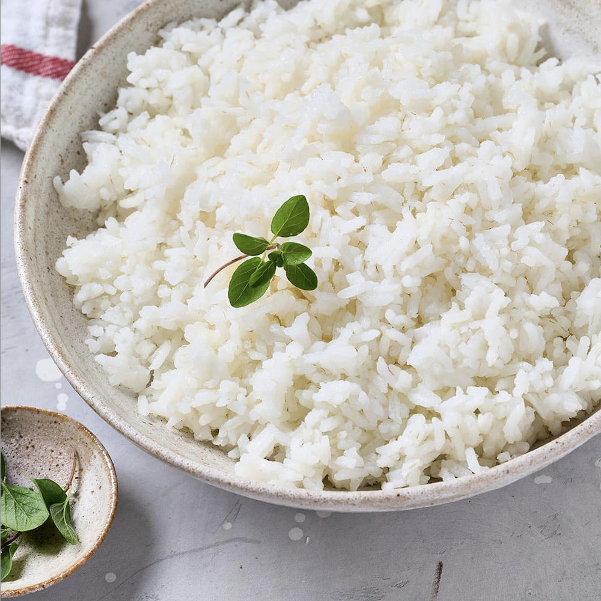

Jasmine Rice

Ingredients:
- 1 cup jasmine rice
- 1 1/4 cups water
Instructions:
- Place rice in a bowl, fill with water and swish. Once cloudy, drain. Repeat 2 – 3 more times until water is pretty clear.
- Drain rice in a colander, transfer to saucepan.
- Place rice and water in a medium saucepan (one with a tight fitting lid). Bring to rapid simmer without a lid on medium high heat.
- Turn down to low or medium low so it's simmering gently, then place lid on.
- Cook 12 minutes or until water is absorbed by rice.
- Keep the lid on then remove from heat. Stand 10 minutes, fluff with rubber spatula or rice paddle, then serve